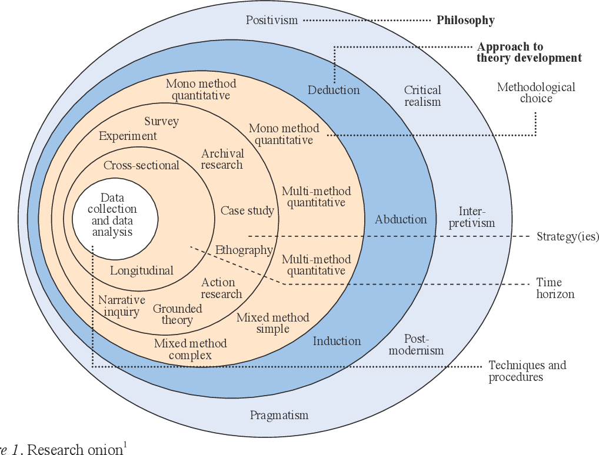

9 Rough guide to writing a problem statement
Coming up with a good question does not mean coming up with a question that will change the world. It means coming up with a question that you can answer in the time you are allowed, and with the tools you have (or have time to learn).
A note on how to get started with your problem selection – try to be curious. It is going to take some active effort.
Most of you have identified an area of interest, rather than any specific question. These are just a few pointers to help you to identify a good problem.
- If you want to read a pretty good “how-to” guide, try this one: https://www.wikihow.com/Write-a-Problem-Statement
You need to actively apply yourselves to finding a question:
9.1 Step 1: Brainstorm / ideation
Find a meeting room and mind-map an area of economics that you are interested in.
A very high-level overview of the courses (like the table of contents in your textbooks) you have done so far should help you to understand the tools that you have, which you can use to answer whatever question you end up asking.
- Some of these tools will be theories, models, data types and sources. The learning outcomes of your courses are also a good guide (check Moodle).
If you really want to be active in your search for problems, and deal with real life issues – pick up a phone and make some calls to people in the area or industry you want to look at. These kinds of discussion can be really motivating and insightful.
As a group you can really benefit by getting ideas and input from each other. This does not need to take a long time but does require effort.
Don’t get caught up by not deciding what to do – get into a room, set a time frame and get finished with the choice early.
Some interesting possible approaches can be seen here – many of these are related to innovation to products, but the general ideas can be used to create research ideas too:
“The 7 All-time Greatest Ideation Techniques”
“The master ideation toolbox - 10 tools to unleash creativity from anyone.”
“Our favorite ideation tools”
“Ideation in Design Thinking: Tools and Methods” - 05/02/2017 - by Rafiq Elmansy
9.1.1 Courses in Econometrics at AAU
The following main methods are covered in each of the semesters, and economic analyses should be conducted that reflect a knowledge up to at least the level of technical analysis of each semester.
9.1.1.1 Methods notes - Econometrics 4. semester
- OLS - simple linear regression
- OLS - multiple linear regression
- Linear regressions in matrices
- Inference and hypothesis testing
- And 6. OLS - Assymptotics, functional form and prediction
- Goodness of fit
- Multiple regression analysis with qualitative data
- Using dummy variables
- Heteroskedasticity.
- Normal distribution model specification.
- Proxy variables measure error.
- Non-nested models, missing data, outliers, least absolute deviations, estimations and multicollinearity.
- Instrumental variables - 2 stage least squares.
- Instrumental variables continued - 2 stage least squares with heteroskedasticity.
- PROBIT and LOGIT
9.1.1.2 Methods notes - Econometrics 5. semester
- Time series and seasonality trends
- Cyclical correlation in univariate time-series
- AR and MA processes
- ACF and PACF
- Stationarity
- ARIMA - Autoregressive Integrated Moving Average Model
- Mandatory exercise in forecasting
- Properties and evaluation
- Multivariate time series analysis
- Engel-Granger
- ARDL - Auto-regressive distributed lag models
- Dynamic models with non stationary variables
- Cointegration and error correction models
- Spurious regression
- Further extension
- Cointegration and bounce test
- VAR
- Vector
9.2 Step 2: Getting that problem statement clear
Where to start?
Read. This starts with a good literature search.
Some reflective questions that I recommend you consider before the meeting:
What are you investigating (you have a problem statement for this already - but it still lacks some clarity)?
i.e. What do you mean by: “årsagen?” What do you mean by: “handel med omverden?” How do you define globalisation? When you say “påvirke,” what do you mean?
Is it all people in the USA? All industries? Aggregate economic measures?
When you talk about effects, it usually implies that there is some kind of causal relationship… When looking at national economic aggregates - there are many possible “causes” for changes. Political, social, economic, technological, etc.Why is it important to investigate this?
Who would care about this result? i.e. why are you doing this research? what is the motivation behind finding an answer to this question?
What is the problem that you are actually trying to throw some light on?
How have others explored this?
What did they find?
What are some of the conclusions that have been drawn?
Are there some concerns/issues with how other people have investigated it?
How could you possibly explore this question?
Are there some alternative explanations that have not been considered?
Are there some other perspectives that have been ignored? For example… if the USA is able to strengthen it’s trade position, what are the consequences for smaller countries that compete in the same markets?
Is there some new data available that illuminates a new part of the problem?
Are there better measures available for inequality / trade performance / competitiveness / etc. ?
How are you going to make the choice about what road to take?
If you had all the money and time in the world, how would you investigate this problem?
What are the first steps / minimum requirements needed to be able to answer the question?
What options are real possibilities in the time that is left?
Who is going to do what?
9.3 Using the introduction as the route to the problem statement
A good introduction leads to a good problem statement, but this is only possible if you have some good material to work with.
9.3.1 Example flow of a good introduction
You could list some shocking figures or numbers that highlight that there is some area / issue that we should be concerned about. It could also be some clear contradiction or controversy in the literature that needs clarification - but this requires some careful reading. (This defines the problem area that you want to address - normally these are the effects of some other problem that can be identified.)
You could then explain that some people see (explain) these facts/figures from the perspective of A / B / C . . . and conclude that X / Y / Z. Another group of researchers suggest that there may be another way to interpret these figures.. they say. . . etc. (This highlights existing theories in the literature - these could be conflicting explanations for the effects that are observed by different researchers. Always remember that research can have a particular agenda, i.e. to promote efficiency of markets, or to critique main-stream literature - so be a little critical when reading. Every researcher is trying to sell their ideas.)
Next, you could explain that ‘these’ different approaches suggest that this problem could be investigated by doing E/F/G. (Identification of possible ways of addressing the issue - There are a variety of quantitative and qualitative methods, and some people rely more on some than on others. This section should still be able to refer to how other people have addressed the issue. Here is where you narrow down what might be a good way to look at the problem.)
More specifically, therefore, we want to investigate how / if / what the effects of / etc. (By this stage you should be able to be specific about the exact part of the problem that you are interested in addressing, and all of the arguments for why it is interesting should already have been made.)
9.4 Some general notes about writing a problem statement
The general structure of questions in most economic analyses is: What is, has been, or will be the impact of A on B?
9.4.1 Where do you find a problem in macroeconomics?
Many economic queries attempt to measure social consequences, and most often try to assign a financial value to those consequences. Sometimes this is phrased as a “comparative outcome” or “alternative scenario.” Normally this means that one option is better than another. This is not surprising, since pretty much all macroeconomic variables are aggregated financial values or derivatives thereof.
Other ways to frame a question could be:
Why is one option better than the other? How can you tell?
How does a change in X affect income for the economy / households / teachers?
How many people are employed?
Labour productivity?
How is the standard of living affected?
These are justification options (evidence) to motivate why an investigation is a good idea. Just remember that you need to be able to find the evidence to back up your arguments. As noted in the example of an introduction flow above, your selection of a method should be the logical conclusion of your reading.
9.4.2 Answering the Why?
Why is it that investigating this problem will be beneficial? To answer the question generally requires awareness of:
What?
When?
Where?
Who?
In what way?
How?
These things are the specifics of the problem statement, but they will not provide you with the answer to why it is important.
The best place to find an answer to why? is to read some of the most recent work on the topic you have found. Anything that has been published has been read and edited by at least 5 people by the time it goes to a journal. The arguments in those articles should therefore be pretty reasonable.
Once you understand your why? you can start with the specifics
9.4.3 What?
For example: If you chose to research currency markets, some of the sub-categories could be (What?):
Trading platforms
Exchange rate policies
Regulations
Common currency areas
Clearing and settlement systems
Speculation
Risk-mitigation / hedging
This delimitation is often determined by the problem area that you identify. Normally illustrated by something interesting or concerning, which leads you to think that investigating the area might be interesting.
You can go the other way around, and check what has been written about recently or is currently being funded at the EU or national levels. Read some of the latest literature relating to it and then identify if there is a similar problem in an area that has not yet been investigated.
A third possibility is to open up some of the really amazing data repositories of major institutions and see if some of those can inspire you.
9.4.4 When?
You need to be carefully aware of what time period you choose to investigate, as it has direct consequences for the types of conclusions you can make from your analysis. If you look at 1950 -1970 consumption data, you can’t really say anything intelligent about the use of disposable income in 2020.
Historical analysis is crucial in economics, but you should always be aware of how the structure of the economies of the world have shifted over time.
Education rates, the type of institutions that exist, levels of unemployment, the size of government, etc.
A trendy catch phrase for this kind of context is PESTLE, an anagram for how the context of countries change:
Political
Economic
Social
Technological
Legal
Environmental
Please don’t write this list out and do a PESTLE analysis in your projects, it is just to tell you that there are many changes that take place over time. And that you need to think specifically about time in your problem statement.
9.4.5 Where?
This is quite obvious but is not only related to geographical borders. For example, a study could be:
National
Municipal
Regional
Global
Local (or micro)
9.4.6 Who?
Which groups are involved in your project, and who is it that will be interested in reading the results of your research? Who will the research / problem investigation be useful or interesting for.
Demographic specific (Ex., students, low-income families, employees at public institutions)
Institution specific (Ex. Banks, the national bank, the stock exchange, or one specific institution)
Industry specific (Ex. Mining, agriculture, home owners associations, mortgage institutes, or alternatively at a “sector” level, such as households, firms, government etc.)
Country specific
Etc.
9.4.7 In what way?
You also need to know what kind of impact or relationship you are looking for. Is it,
How much of the behaviour of A can be explained by B?
Is it a theoretical or empirical issue or are you interested in?
Or how much influence will A have on B? Or vice versa, or both?
Is it causal? Are you arguing that one thing is causing another thing? – you have to be quite careful trying to do these ones.
9.4.8 How?
Finally, you need to be able to explain how you are going to investigate the problem. You should consider your tools and your course on methodology (and philosophy of science) to be able to figure out how will you answer the question.
You can boggle your brain a bit with the wiki-page on philosophy of science here:
https://en.wikipedia.org/wiki/Philosophy_of_science
Recall that methodology is layered, a very simplistic way to think about it is as a hierarchy:
> Philosophy of science
-> Methodology
--> Theory
----> Methods
You can watch a few videos about what this is:
This one is pretty good, but a little dry: https://youtu.be/IvwkMxgahA4
Daniel Hausman - This one has some interesting perspectives (but is much better in 2x speed): https://youtu.be/EfF6WD8s_ps (but he doesn’t really list any specific philosophies)
Paul Hoyningen-Huene at Leibniz Universität Hannover has a whole course on it if you get really caught up in it - https://www.youtube.com/watch?v=tP8teUgZcBY&list=PLGV2ddg-PFGvWKDeTyrUji7TXY8y1SHjl (He is pretty entertaining and you could learn a lot in his course – and have a few laughs at dad jokes – in 22 lectures)
Marc Lavoie – This might help if you are interested in locating the theory you are using in either heterodox or orthodox categories of economic methodology. Disclaimer: I do not believe this is a constructive way to categorise methodology, but it is a common way. https://youtu.be/DEROFQIao4o
The philosophy of science defines what kind of results will be considered valid. For example, is it valid to make a conclusion about the future based on the past (i.e. to use data to make predictions)?
Some examples of this are:
Cartesian / Euclidian philosophies of science
The Babylonian mode of thinking
Critical realism
Scepticism
Logical positivism
This colour coded conceptual map of philosophy might put some of the terms you come across into perspective (with some spin on “education”):
https://cmapspublic3.ihmc.us/rid%3D1196256709922_36526043_8120/1196256715039I908793757I8261Iimage
Theories use methods, and methods are part of a particular methodology, and the methodology is made valid by the theory of science inside which it fits.
Methods are at the bottom of the pyramid, and can be quantitative or qualitative, or a combination of both. It is important to be aware of what you are doing and using. They are normally used to motivate one or another theory.
This stuff can be extremely dry and boring, or it can also be super interesting (if you are into it). It is how we know, that we know, that what we know, is really something factual – or what a fact is in the first place. It is closely related to metaphysics, epistemology and ontology. None of which will help you cook an egg in the morning, but you might find the study as fascinating as I do (even if I will never suck up the energy to finish reading Immanuel Kant’s Critique of Pure Reason).
This Saunders et al. research onion is a pretty useful way to think about each of the decisions we make when constructing out research. Starting from the outside moving inwards:

Source: Saunders, Lewis and Thornhill (2019), Research methods for business students